Database Design
OLTP and OLAP
-
How should we organize and manage data?
-
Schemas: How should my data be logically organized?
-
Normalization: Should my data have minimal dependency and redundancy?
-
Views: What joins will be done most often?
-
Access control: Should all users of the data have the same level of access?
-
DBMS: How do I pick between all the SQL and NoSQL options?
-
and more!
It depends on the intended use the date
Approaches to processing data
Some concrete examples
| OLTP tasks | OLAP tasks |
|---|---|
| - Find the price of a book | - Calculate books with best profit margin |
| - Update latest customer transaction | - Find most loyal customers |
| - Keep track of employee hours | - Decide employee of the month |
OLAP vs. OLTP
| OLTP | OLAP | |
|---|---|---|
| Purpose | support daily transactions | report and analyze data |
| Design | application-oriented | subject-oriented |
| Data | up-to-date, operational | consolidated, historical |
| Size | snapshot, gigabytes | archive, terabytes |
| Queries | simple transactions & frequent updates | complex, aggregate queries & limited updates |
| Users | thousands | hundreds |
Working together
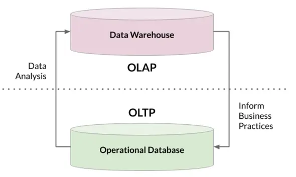
Takeaways
-
Step back and figure out business requirements
-
Difference between OLAP and OLTP
-
OLAP? OLTP? Or something else?
Storing Data
Structuring data
- Structured data
-
Follows a schema
-
Defined data types & relationships
_e.g., SQL, tables in a relational database _
- Unstructured data
-
Schemeless
-
Makes up most of data in the world
e.g., photos, chat logs, MP3
- Semi-structured data
-
Does not follow larger schema
-
Self-describing structure
e.g., NoSQL, XML, JSON
# Example of a JSON file
"user": {
"profile_use_background_image": true,
"statuses_count": 31,
"profile_background_color": "CODEED",
"followers_count": 3066,
...
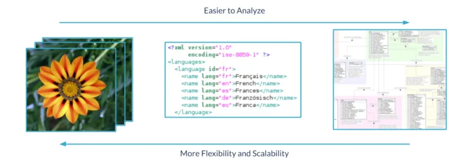
Storing data beyond traditional databases
-
Traditional databases
- For storing real-time relational structured data ? OLTP
-
Data warehouses
- For analyzing archived structured data ? OLAP
-
Data lakes
-
For storing data of all structures = flexibility and scalability
-
For analyzing big data
-
Data warehouses
-
Optimized for analytics - OLAP
-
Organized for reading/aggregating data
-
Usually read-only
-
-
Contains data from multiple sources
-
Massively Parallel Processing (MPP)
-
Typically uses a denormalized schema and dimensional modeling
Data charts
- Subset of data warehouses
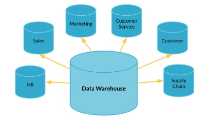
Data lakes
-
Store allז types of data at a lower cost:
- e.g., raw, operational databases, IoT device logs, real-time, relational and non-relational
-
Retains all data and can take up petabytes
-
Schema-on-read as opposed to schema-on-write
-
Need to catalog data otherwise becomes a data swamp
-
Run big data analytics using services such as Apache Spark and Hadoop
- Useful for deep learning and data discovery because activities require so much data
ETL ELT
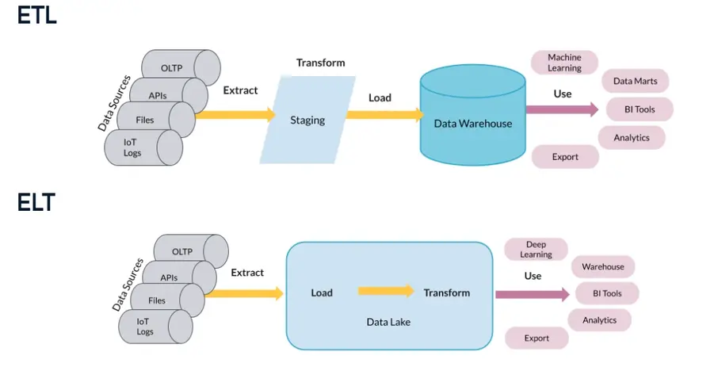
Database design
What is database design?
-
Determines how data is logically stored
- How is data going to be read and updated?
-
Uses database models: high-level specifications for database structure
-
Most popular: relational model
-
Some other options: NoSQL models, object-oriented model, network model
-
-
Uses schemas: blueprint of the database
-
Defines tables, fields, relationships, indexes, and views
-
When inserting data in relational databases, schemas must be respected
-
Data modeling
Process of creating a data model for the data to be stored
-
Conceptual data model: describes entities, relationships, and attributes
- Tools: data structure diagrams, e.g., entity-relational diagrams and UML diagrams
-
Logical data model: defines tables, columns, relationships
- Tools: database models and schemas, e.g., relational model and star schema
-
Physical data model: describes physical storage
- Tools: partitions, CPUs, indexes, backup systems and tablespaces
Conceptual ER diagram
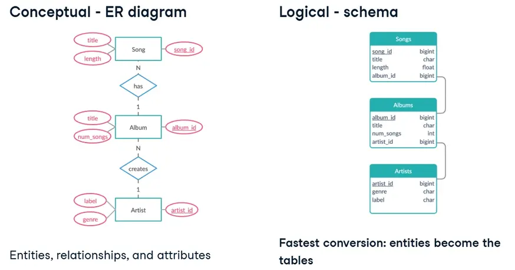
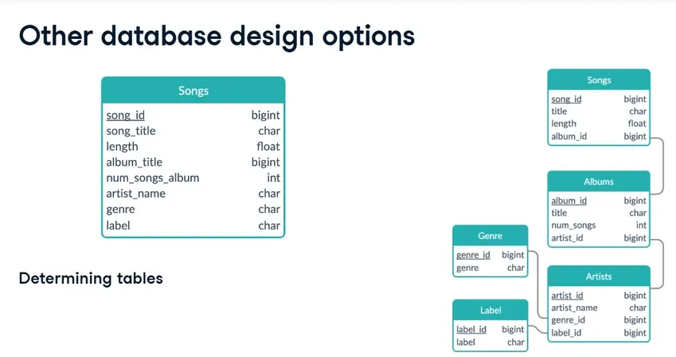
Beyond the relational model
Dimensional modeling
Adaptation of the relational model for data warehouse design
-
Optimized for OLAP queries: aggregate data, not updating (OLTP)
-
Built using the star schema
-
Easy to interpret and extend schema
Elements of disansional modeling
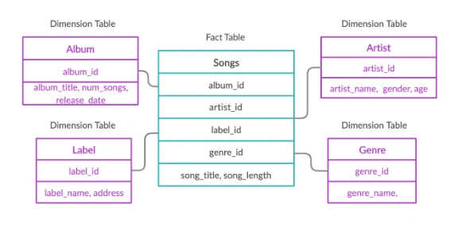
Organize by:
- What is being analyzed?
- How often do entities change?
Fact tables
- Decided by business use-case
- Holds records of a metric
- Changes regularly
- Connects to dimensions via foreign keys
Dimension tables
- Holds descriptions of attributes
- Does not change as often
Deciding fact and dimension tables
Imagine that you love running and data. It’s only natural that you begin collecting data on your weekly running routine. You’re most concerned with tracking how long you are running each week. You also record the route and the distances of your runs. You gather this data and put it into one table called Runs with the following schema:
runs
---
duration_mins - float
week - int
month - varchar(160)
year - int
park_name - varchar(160)
city_name - varchar(160)
distance_km - float
route_name - varchar(160)
After learning about dimensional modeling, you decide to restructure the schema for the database. Runs has been pre-loaded for you.
-- Create a route dimension table
CREATE TABLE route(
route_id INTEGER PRIMARY KEY,
park_name VARCHAR(160) NOT NULL,
city_name VARCHAR(160) NOT NULL,
distance_km FLOAT NOT NULL,
route_name VARCHAR(160) NOT NULL
);
-- Create a week dimension table
CREATE TABLE week(
week_id INTEGER PRIMARY KEY,
week INTEGER NOT NULL,
month VARCHAR(160) NOT NULL,
year INTEGER NOT NULL
);
Querying the dimensional model
Here it is! The schema reorganized using the dimensional model:
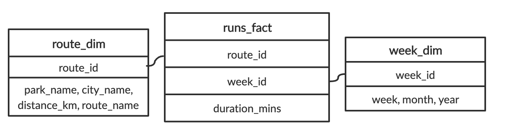
Let’s try to run a query based on this schema. How about we try to find the number of minutes we ran in July, 2019? We’ll break this up in two steps. First, we’ll get the total number of minutes recorded in the database. Second, we’ll narrow down that query to week_id’s from July, 2019.
SELECT
-- Select the sum of the duration of all runs
SUM(duration_mins)
FROM
runs_fact;
Join week_dim and runs_fact. Get all the week_id’s from July, 2019.
SELECT
-- Get the total duration of all runs
SUM(duration_mins)
FROM
runs_fact
-- Get all the week_id's that are from July, 2019
INNER JOIN week_dim ON runs_fact.week_id = week_dim.week_id
WHERE month = 'July' and year = '2019';
Star and snowflake schema
Star schema
Dimensional modeling: star schema
Fact tables
-
Holds records of a metric
-
Changes regularly
-
Connects to dimensions via foreign keys
Dimension tables
-
Holds descriptions of attributes
-
Does not change as often
Example:
-
Supply books to stores in USA and Canada
-
Keep track of book sales
Star schema example
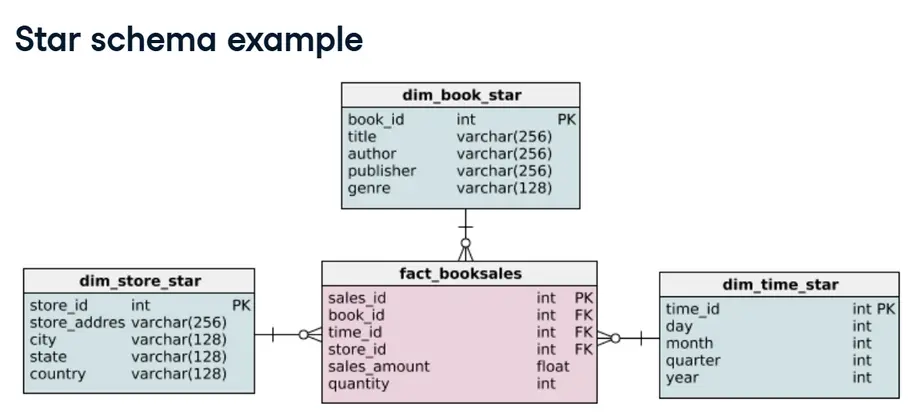
Snowfake schema (an extension)
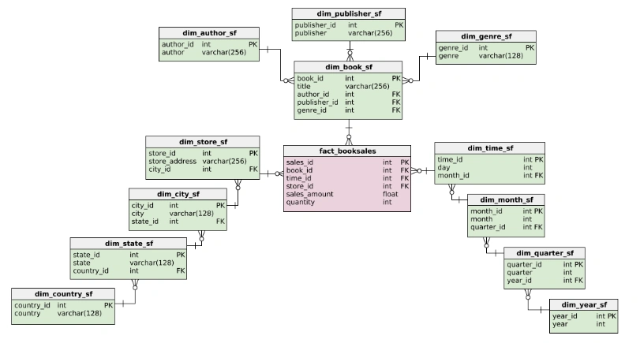
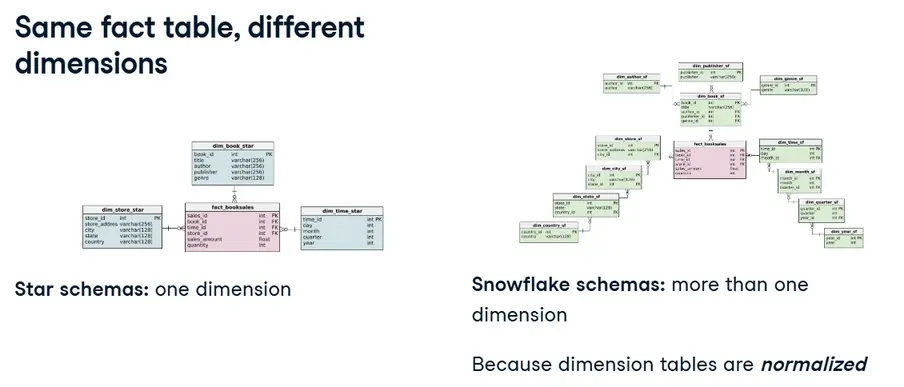
What is normalization?
-
Database design technique
-
Divides tables into smaller tables and connects them via relationships
-
Goal: reduce redundancy and increase data integrity
Identify repeating groups of data and create new tables for them
Book dimension of the star schema
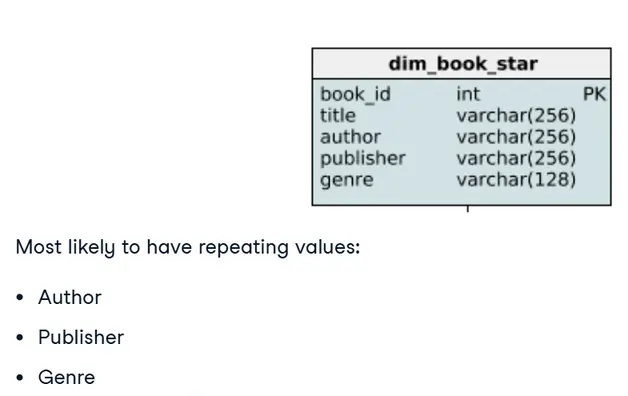
Book dimension of snowflake schema
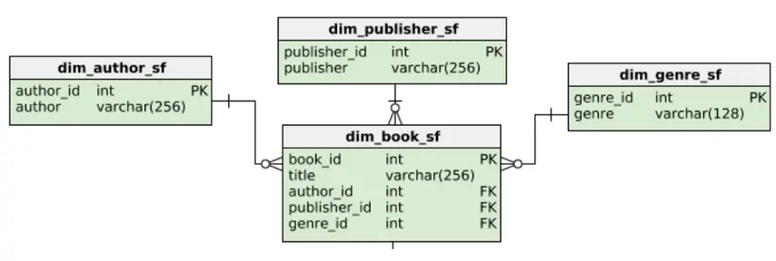
Book dimension of the star schema
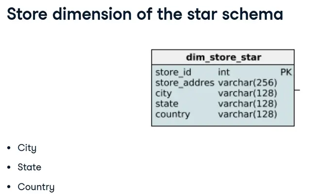
Store dimension of the snowflake schema
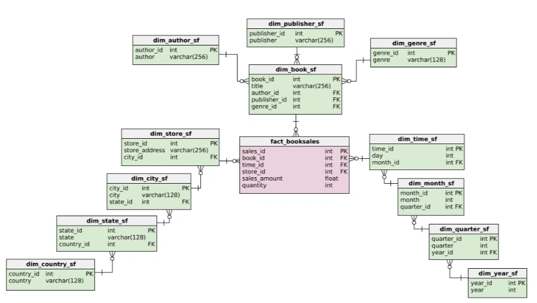
Adding foreign keys
Foreign key references are essential to both the snowflake and star schema. When creating either of these schemas, correctly setting up the foreign keys is vital because they connect dimensions to the fact table. They also enforce a one-to-many relationship, because unless otherwise specified, a foreign key can appear more than once in a table and primary key can appear only once.
The fact_booksales table has three foreign keys: book_id, time_id, and store_id. In this exercise, the four tables that make up the star schema below have been loaded. However, the foreign keys still need to be added.
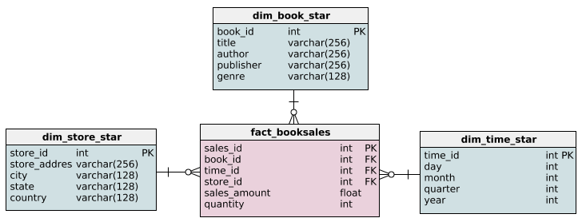
In the constraint called sales_book, set book_id as a foreign key.
In the constraint called sales_time, set time_id as a foreign key.
In the constraint called sales_store, set store_id as a foreign key.
-- Add the book_id foreign key
ALTER TABLE fact_booksales ADD CONSTRAINT sales_book
FOREIGN KEY (book_id) REFERENCES dim_book_star (book_id);
-- Add the time_id foreign key
ALTER TABLE fact_booksales ADD CONSTRAINT sales_time
FOREIGN KEY (time_id) REFERENCES dim_time_star (time_id);
-- Add the store_id foreign key
ALTER TABLE fact_booksales ADD CONSTRAINT sales_store
FOREIGN KEY (store_id) REFERENCES dim_store_star (store_id);
Extending the book dimension
In the video, we saw how the book dimension differed between the star and snowflake schema. The star schema’s dimension table for books, dim_book_star, has been loaded and below is the snowflake schema of the book dimension.
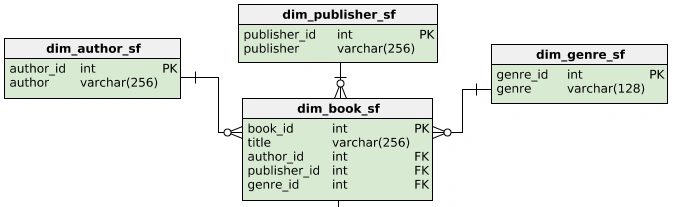
In this exercise, you are going to extend the star schema to meet part of the snowflake schema’s criteria. Specifically, you will create dim_author from the data provided in dim_book_star.
Create dim_author with a column for author.
Insert all the distinct authors from dim_book_star into dim_author.
-- Create dim_author with an author column
CREATE TABLE dim_author (
author varchar(256) NOT NULL
);
-- Insert distinct authors
INSERT INTO dim_author
SELECT DISTINCT author FROM dim_book_star;
Alter dim_author to have a primary key called author_id.
Output all the columns of dim_author.
-- Create a new table for dim_author with an author column
CREATE TABLE dim_author (
author varchar(256) NOT NULL
);
-- Insert authors
INSERT INTO dim_author
SELECT DISTINCT author FROM dim_book_star;
-- Add a primary key
ALTER TABLE dim_author ADD COLUMN author_id SERIAL PRIMARY KEY;
-- Output the new table
SELECT * FROM dim_author;
- Creating the
dim_authorTable:
CREATE TABLE dim_author (
author varchar(256) NOT NULL
);
This line creates a new table named
dim_authorwith a single column author of typevarchar(256). TheNOT NULLconstraint ensures that every entry in this column must have a value, which is important for maintaining data integrity.
2.Inserting Distinct Authors:
INSERT INTO dim_author
SELECT DISTINCT author FROM dim_book_star;
Here, we are populating the
dim_authortable with unique author names. TheSELECT DISTINCTstatement retrieves all unique authors from thedim_book_startable, ensuring that each author appears only once in the dim_author table. This step is crucial for normalizing the data and avoiding duplicate entries.
- Adding a Primary Key:
ALTER TABLE dim_author ADD COLUMN author_id SERIAL PRIMARY KEY;
This line alters the
dim_authortable by adding a new column namedauthor_id. The SERIAL keyword automatically generates a unique integer for each row, which serves as the primary key. The primary key uniquely identifies each record in the table, which is essential for efficient data retrieval and maintaining relationships with other tables.
- Outputting the Table:
SELECT * FROM dim_author;
Finally, this statement retrieves and displays all the columns and rows from the
dim_authortable. It allows you to verify that the table has been correctly populated and structured, with theauthor_idserving as the primary key and each author listed only once.
Normalized and denormalized databases
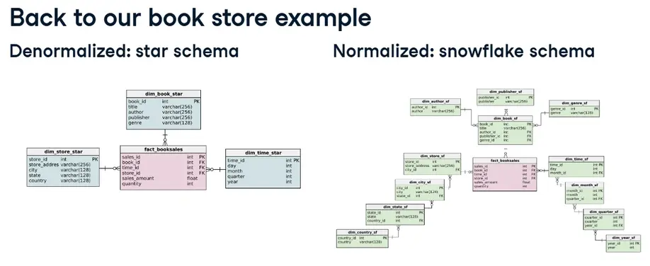
Denormalized Query
- Goal: get quantity of all Octavia E. Butler books sold in Vancouver in Q4 of 2018
SELECT SUM(quantity)
FROM fact_booksales
-- Join to get city
INNER JOIN dim_store_star ON fact_booksales.store_id = dim_store_star.store_id
-- Join to get author
INNER JOIN dim_book_star ON fact_booksales.book_id = dim_book_star.book_id
-- Join to get year and quarter
INNER JOIN dim_time_star ON fact_booksales.time_id = dim_time_star.time_id
-- WHERE conditions
WHERE dim_store_star.city = 'Vancouver'
AND dim_book_star.author = 'Octavia E. Butler'
AND dim_time_star.year = 2018
AND dim_time_star.quarter = 4;
7600
Normalized query
SELECT
SUM(fact_booksales.quantity)
FROM
fact_booksales
-- Join to get city
INNER JOIN dim_store_sf ON fact_booksales.store_id = dim_store_sf.store_id
INNER JOIN dim_city_sf ON dim_store_sf.city_id = dim_city_sf.city_id
-- Join to get author
INNER JOIN dim_book_sf ON fact_booksales.book_id = dim_book_sf.book_id
INNER JOIN dim_author_sf ON dim_book_sf.author_id = dim_author_sf.author_id
-- Join to get year and quarter
INNER JOIN dim_time_sf ON fact_booksales.time_id = dim_time_sf.time_id
INNER JOIN dim_month_sf ON dim_time_sf.month_id = dim_month_sf.month_id
INNER JOIN dim_quarter_sf ON dim_month_sf.quarter_id = dim_quarter_sf.quarter_id
INNER JOIN dim_year_sf ON dim_quarter_sf.year_id = dim_year_sf.year_id
-- WHERE conditions
WHERE dim_city_sf.city = 'Vancouver'
AND dim_author_sf.author_name = 'Octavia E. Butler'
AND dim_year_sf.year = 2018
AND dim_quarter_sf.quarter = 4;
7600
Total of 8 joins
So, why would we want to normalize a databases?
Normalization saves space
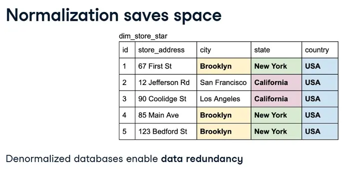
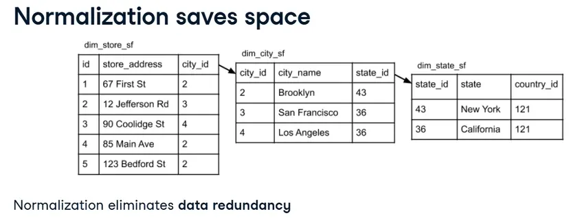
Normalization ensures better data integrity
1. Enforces data consistency
Must respect naming conventions because of referential integrity, e.g., ‘California’, not ‘CA’ or ‘california’
2. Safer updating, removing, and inserting
Less data redundancy = less records to alter
3. Easier to redesign by extending
Smaller tables are easier to extend than larger tables
Database normalization
Advantages
-
Normalization eliminates data redundancy: save on storage
-
Better data integrity: accurate and consistent data
Disadvantages
- Complex queries require more CPU
Remember OLTP and OLAP?
| OLTP | OLAP |
|---|---|
| e.g., Operational databases | e.g., Operational databases |
| Typically highly normalized | Typically less normalized |
| - Write-intensive | - Read-intensive |
| - Prioritize quicker and safer insertion of data | - Prioritize quicker queries for analytics |
Querying the star schema
The novel genre hasn’t been selling as well as your company predicted. To help remedy this, you’ve been tasked to run some analytics on the novel genre to find which areas the Sales team should target. To begin, you want to look at the total amount of sales made in each state from books in the novel genre.
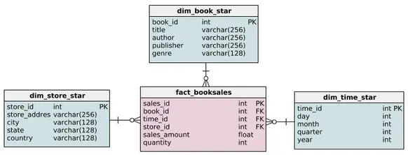
Luckily, you’ve just finished setting up a data warehouse with the following star schemSelect state from the appropriate table and the total sales_amount.
Complete the JOIN on book_id.
Complete the JOIN to connect the dim_store_star table
Conditionally select for books with the genre novel.
Group the results by state.
-- Output each state and their total sales_amount
SELECT dim_store_star.state, SUM(sales_amount)
FROM fact_booksales
-- Join to get book information
JOIN dim_book_star ON fact_booksales.book_id = dim_book_star.book_id
-- Join to get store information
JOIN dim_store_star ON fact_booksales.store_id = dim_store_star.store_id
-- Get all books with in the novel genre
WHERE
dim_book_star.genre = 'novel'
-- Group results by state
GROUP BY
dim_store_star.state;
Querying the snowflake schema
Imagine that you didn’t have the data warehouse set up. Instead, you’ll have to run this query on the company’s operational database, which means you’ll have to rewrite the previous query with the following snowflake schema:
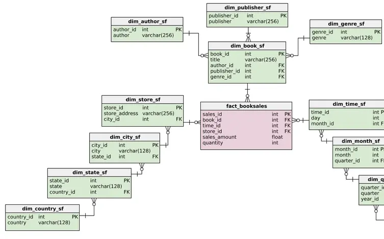
The tables in this schema have been loaded. Remember, our goal is to find the amount of money made from the novel genre in each state.
Select state from the appropriate table and the total sales_amount.
Complete the two JOINS to get the genre_id’s.
Complete the three JOINS to get the state_id’s.
Conditionally select for books with the genre novel.
Group the results by state.
-- Output each state and their total sales_amount
SELECT dim_state_sf.state, SUM(sales_amount)
FROM fact_booksales
-- Joins for genre
JOIN dim_book_sf on fact_booksales.book_id = dim_book_sf.book_id
JOIN dim_genre_sf on dim_book_sf.genre_id = dim_genre_sf.genre_id
-- Joins for state
JOIN dim_store_sf on fact_booksales.store_id = dim_store_sf.store_id
JOIN dim_city_sf on dim_store_sf.city_id = dim_city_sf.city_id
JOIN dim_state_sf on dim_city_sf.state_id = dim_state_sf.state_id
-- Get all books with in the novel genre and group the results by state
WHERE
dim_genre_sf.genre = 'novel'
GROUP BY
dim_state_sf.state;
Extending the snowflake schema
The company is thinking about extending their business beyond bookstores in Canada and the US. Particularly, they want to expand to a new continent. In preparation, you decide a continent field is needed when storing the addresses of stores.
Luckily, you have a snowflake schema in this scenario. As we discussed in the video, the snowflake schema is typically faster to extend while ensuring data consistency. Along with dim_country_sf, a table called dim_continent_sf has been loaded. It contains the only continent currently needed, North America, and a primary key. In this exercise, you’ll need to extend dim_country_sf to reference dim_continent_sf.
Add a continent_id column to dim_country_sf with a default value of 1. Note that NOT NULL DEFAULT(1) constrains a value from being null and defaults its value to 1.
Make that new column a foreign key reference to dim_continent_sf’s continent_id.
-- Add a continent_id column with default value of 1
ALTER TABLE dim_country_sf
ADD continent_id int NOT NULL DEFAULT(1);
-- Add the foreign key constraint
ALTER TABLE dim_country_sf ADD CONSTRAINT country_continent
FOREIGN KEY (continent_id) REFERENCES dim_continent_sf(continent_id);
-- Output updated table
SELECT * FROM dim_country_sf;
Normal forms
Normalization
Identify repeating groups of data and create new tables for them
A more formal definition:
The goals of normalization are to:
-
Be able to characterize the level of redundancy in a relational schema
-
Provide mechanisms for transforming schemas in order to remove redundancy
Normal forms (NF)
-
Ordered from least to most normalized:
-
First normal form (1NF)
-
Second normal form (2NF)
-
Third normal form (3NF)
-
Elementary key normal form (EKNF)
-
Boyce-Codd normal form (BCNF)
-
Fourth normal form (4NF)
-
Essential tuple normal form (ETNF)
-
Fifth normal form (5NF)
-
Domain-key Normal Form (DKNF)
-
Sixth normal form (6NF)
1NF
-
Each record must be unique - no duplicate rows
-
Each cell must hold one value
Initial data
| Student_id | Student_Email | Courses_Completed |
|------------|------------------|---------------------------------------------------|
| 235 | jim@gmail.com | Introduction to Python, Intermediate Python |
| 455 | kelly@yahoo.com | Cleaning Data in R |
| 767 | amy@hotmail.com | Machine Learning Toolbox, Deep Learning in Python |
In 1NF form
+------------+------------------+
| Student_id | Student_Email |
+------------+------------------+
| 235 | jim@gmail.com |
| 455 | kelly@yahoo.com |
| 767 | amy@hotmail.com |
+------------+------------------+
+------------+---------------------------+
| Student_id | Completed |
+------------+---------------------------+
| 235 | Introduction to Python |
| 235 | Intermediate Python |
| 455 | Cleaning Data in R |
| 767 | Machine Learning Toolbox |
| 767 | Deep Learning in Python |
+------------+---------------------------+
2NF
- Must satisfy 1NF AND
- If primary key is one column
- then automatically satisfies 2NF
- If there is a composite primary key
- then each non-key column must be dependent on all the keys
- If primary key is one column
Initial data
+------------+-----------+---------------+----------------+----------+
| Student_id | Course_id | Instructor_id | Instructor | Progress |
+------------+-----------+---------------+----------------+----------+
| 235 | 2001 | 560 | Nick Carchedi | 0.55 |
| 455 | 2345 | 658 | Ginger Grant | 0.10 |
| 767 | 6584 | 999 | Chester Ismay | 1.00 |
+------------+-----------+---------------+----------------+----------+
In 2NF form
+------------+-----------+-------------------+
| Student_id | Course_id | Percent_Completed |
+------------+-----------+-------------------+
| 235 | 2001 | 0.55 |
| 455 | 2345 | 0.10 |
| 767 | 6584 | 1.00 |
+------------+-----------+-------------------+
+-----------+---------------+----------------+
| Course_id | Instructor_id | Instructor |
+-----------+---------------+----------------+
| 2001 | 560 | Nick Carchedi |
| 2345 | 658 | Ginger Grant |
| 6584 | 999 | Chester Ismay |
+-----------+---------------+----------------+
3NF
- Satisfies 2NF
- No transitive dependencies: non-key columns can’t depend on other non-key columns
Initial Data
+-----------+---------------+----------------+--------+
| Course_id | Instructor_id | Instructor | Tech |
+-----------+---------------+----------------+--------+
| 2001 | 560 | Nick Carchedi | Python |
| 2345 | 658 | Ginger Grant | SQL |
| 6584 | 999 | Chester Ismay | R |
+-----------+---------------+----------------+--------+
In 3NF
+-----------+----------------+--------+
| Course_id | Instructor | Tech |
+-----------+----------------+--------+
| 2001 | Nick Carchedi | Python |
| 2345 | Ginger Grant | SQL |
| 6584 | Chester Ismay | R |
+-----------+----------------+--------+
+---------------+----------------+
| Instructor_id | Instructor |
+---------------+----------------+
| 560 | Nick Carchedi |
| 658 | Ginger Grant |
| 999 | Chester Ismay |
+---------------+----------------+
Data anomalies
What is risked if we don’t normalize enough?
-
Update anomaly
-
Insertion anomaly
-
Deletion anomaly
Update anomaly
Data inconsistency caused by data redundancy when updating
+------------+-----------------+--------------------------+------------------------+
| Student_ID | Student_Email | Enrolled_in | Taught_by |
+------------+-----------------+--------------------------+------------------------+
| 230 | lisa@gmail.com | Cleaning Data in R | Maggie Matsui |
| 367 | bob@hotmail.com | Data Visualization in R | Ronald Pearson |
| 520 | ken@yahoo.com | Introduction to Python | Hugo Bowne-Anderson |
| 520 | ken@yahoo.com | Arima Models in R | David Stoffer |
+------------+-----------------+--------------------------+------------------------+
To update student 520’s email:
-
Need to update more than one record, otherwise, there will be inconsistency
-
User updating needs to know about redundancy
Insertion anomaly
Unable to add a record due to missing attributes
+------------+-----------------+--------------------------+------------------------+
| Student_ID | Student_Email | Enrolled_in | Taught_by |
+------------+-----------------+--------------------------+------------------------+
| 230 | lisa@gmail.com | Cleaning Data in R | Maggie Matsui |
| 367 | bob@hotmail.com | Data Visualization in R | Ronald Pearson |
| 521 | ken@yahoo.com | Introduction to Python | Hugo Bowne-Anderson |
| 521 | ken@yahoo.com | Arima Models in R | David Stoffer |
+------------+-----------------+--------------------------+------------------------+
Unable to insert a student who has signed up but not enrolled in any courses
Deletion anomaly
Deletion of record(s) causes unintentional loss of data
+------------+-----------------+--------------------------+------------------------+
| Student_ID | Student_Email | Enrolled_in | Taught_by |
+------------+-----------------+--------------------------+------------------------+
| 230 | lisa@gmail.com | Cleaning Data in R | Maggie Matsui |
| 367 | bob@hotmail.com | Data Visualization in R | Ronald Pearson |
| 520 | ken@yahoo.com | Introduction to Python | Hugo Bowne-Anderson |
| 520 | ken@yahoo.com | Arima Models in R | David Stoffer |
+------------+-----------------+--------------------------+------------------------+
If we delete Student 230, what happens to the data on Cleaning Data in R?
Converting to 1NF
In the next three exercises, you’ll be working through different tables belonging to a car rental company. Your job is to explore different schemas and gradually increase the normalization of these schemas through the different normal forms. At this stage, we’re not worried about relocating the data, but rearranging the tables.
A table called customers has been loaded, which holds information about customers and the cars they have rented.
-- Create a new table to hold the cars rented by customers
CREATE TABLE cust_rentals (
customer_id INT NOT NULL,
car_id VARCHAR(128) NULL,
invoice_id VARCHAR(128) NULL
);
-- Drop two columns from customers table to satisfy 1NF
ALTER TABLE customers
DROP COLUMN cars_rented,
DROP COLUMN invoice_id;
Converting to 2NF
Let’s try normalizing a bit more. In the last exercise, you created a table holding customer_ids and car_ids. This has been expanded upon and the resulting table, customer_rentals, has been loaded for you. Since you’ve got 1NF down, it’s time for 2NF.
Create a new table for the non-key columns that were conflicting with 2NF criteria.
Drop those non-key columns from customer_rentals.
-- Create a new table to satisfy 2NF
CREATE TABLE cars (
car_id VARCHAR(256) NULL,
model VARCHAR(128),
manufacturer VARCHAR(128),
type_car VARCHAR(128),
condition VARCHAR(128),
color VARCHAR(128)
);
-- Insert data into the new table
INSERT INTO cars
SELECT DISTINCT
car_id,
model,
manufacturer,
type_car,
condition,
color
FROM customer_rentals;
-- Drop columns in customer_rentals to satisfy 2NF
ALTER TABLE customer_rentals
DROP COLUMN model,
DROP COLUMN manufacturer,
DROP COLUMN type_car,
DROP COLUMN condition,
DROP COLUMN color;
Converting to 3NF
Last, but not least, we are at 3NF. In the last exercise, you created a table holding car_idss and car attributes. This has been expanded upon. For example, car_id is now a primary key. The resulting table, rental_cars, has been loaded for you.
-- Create a new table to satisfy 3NF
CREATE TABLE car_model(
model VARCHAR(128),
manufacturer VARCHAR(128),
type_car VARCHAR(128)
);
-- Drop columns in rental_cars to satisfy 3NF
ALTER TABLE rental_cars
DROP COLUMN manufacturer,
DROP COLUMN type_car;
Database views
In a database, a view is the result set of a stored query on the data, which the database users can query just as they would in a persistent database collection object (Wikipedia)
Virtual table that is not part of the physical schema
-
Query, not data, is stored in memory
-
Data is aggregated from data in tables
-
Can be queried like a regular database table
-
No need to retype common queries or alter schemas
Creating a view (syntax)
CREATE VIEW view_name AS
SELECT col1, col2
FROM table_name
WHERE condition;
Creating a view (example)
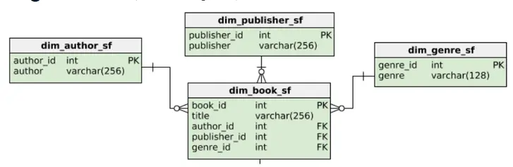
Goal: Return titles and authors of the science fiction genre
CREATE VIEW scifi_books AS
SELECT title, author, genre
FROM dim_book_sf
JOIN dim_genre_sf ON dim_genre_sf.genre_id = dim_book_sf.genre_id
JOIN dim_author_sf ON dim_author_sf.author_id = dim_book_sf.author_id
WHERE dim_genre_sf.genre = 'science fiction';
Querying a view (example)
SELECT * FROM scifi_books
| title | author | genre |
+--------------------------------+------------------+----------------+
| The Naked Sun | Isaac Asimov | science fiction|
| The Robots of Dawn | Isaac Asimov | science fiction|
| The Time Machine | H.G. Wells | science fiction|
| The Invisible Man | H.G. Wells | science fiction|
| The War of the Worlds | H.G. Wells | science fiction|
| Wild Seed (Patternmaster, #1) | Octavia E. Butler| science fiction|
| ... | ... | ... |
Simple view query
Behind the scenes: What happens when you query the view
SELECT * FROM scifi_books;
=
-- Is equivalent to this complex query:
SELECT * FROM (
SELECT
title,
author,
genre
FROM dim_book_sf
JOIN dim_genre_sf ON dim_genre_sf.genre_id = dim_book_sf.genre_id
JOIN dim_author_sf ON dim_author_sf.author_id = dim_book_sf.author_id
WHERE dim_genre_sf.genre = 'science fiction'
);
Viewing views
(in PostgreSQL)
including system views
SELECT * FROM INFORMATION_SCHEMA.views;
exclude system views
SELECT * FROM information_schema.views
WHERE table_schema NOT IN ('pg_catalog', 'information_schema');
Benefits of views
-
Doesn’t take up storage
-
A form of access control
- Hide sensitive columns and restrict what user can see
-
Masks complexity of queries
- Useful for highly normalized schemas
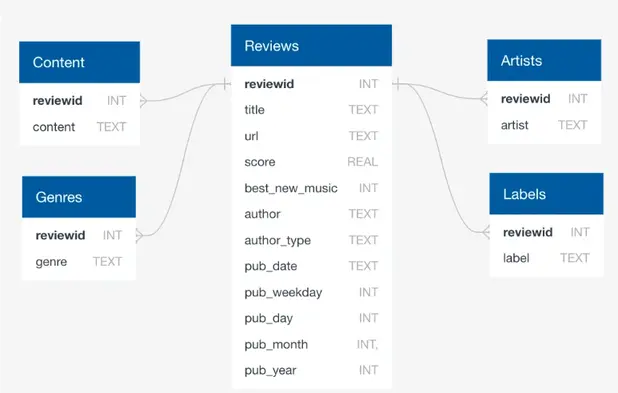
Viewing views
Because views are very useful, it’s common to end up with many of them in your database. It’s important to keep track of them so that database users know what is available to them.
The goal of this exercise is to get familiar with viewing views within a database and interpreting their purpose. This is a skill needed when writing database documentation or organizing views.
-
Query the information schema to get views.
-
Exclude system views in the results.
-- Get all non-systems views
SELECT * FROM information.schem.views
WHERE table_schema NOT IN ('pg_catalog', 'information_schema');
Creating and querying a view
Have you ever found yourself running the same query over and over again? Maybe, you used to keep a text copy of the query in your desktop notes app, but that was all before you knew about views!
In these Pitchfork reviews, we’re particularly interested in high-scoring reviews and if there’s a common thread between the works that get high scores. In this exercise, you’ll make a view to help with this analysis so that we don’t have to type out the same query often to get these high-scoring reviews.
Create a view called high_scores that holds reviews with scores above a 9.
-- Create a view for reviews with a score above 9
CREATE VIEW high_scores AS
SELECT * FROM REVIEWS
WHERE score > 9;
Count the number of records in high_scores that are self-released in the label field of the labels table.
-- Create a view for reviews with a score above 9
CREATE VIEW high_scores AS
SELECT * FROM REVIEWS
WHERE score > 9;
-- Count the number of self-released works in high_scores
SELECT COUNT(*) FROM high_scores
INNER JOIN labels ON high_scores.reviewid = labels.reviewid
WHERE label = 'self-released';
Managing views
Creating more complex views
-
Aggregation:
SUM(),AVG(),COUNT(),MIN(),MAX(),GROUP BY, etc -
Joins:
INNER JOIN,LEFT JOIN,RIGHT JOIN,FULL JOIN -
Conditionals:
WHERE,HAVING,UNIQUE,NOT NULL,AND,OR,>,<, etc
Granting and revoking access to a view
GRANT privilege(s) or REVOKE privilege(s)
ON object
TO role or FROM role
-
Privileges: SELECT, INSERT, UPDATE, DELETE, etc
-
Objects: table, view, schema, etc
-
Roles: a database user or a group of database users
Granting and revoking example
GRANT UPDATE ON ratings TO PUBLIC;
REVOKE INSERT ON films FROM db_user;
Updating a view
UPDATE films SET kind = 'Dramatic' WHERE kind = 'Drama';
Not all views are updatable
-
View is made up of one table
-
Doesn’t use a window or aggregate function
Inserting into a view
INSERT INTO films (code, title, did, date_prod, kind)
VALUES ('T_601', 'Yojimbo', 106, '1961-06-16', 'Drama');
Not all views are insertable
Takeaway: avoid modifying data through views
Dropping a view
DROP VIEW view_name [ CASCADE | RESTRICT ];
-
RESTRICT(default): returns an error if there are objects that depend on the view -
CASCADE: drops view and any object that depends on that view
Redefining a view
CREATE OR REPLACE VIEW view_name AS new_query
-
If a view with view_name exists, it is replaced
-
new_query must generate the same column names, order, and data types as the old query
-
The column output may be different
-
New columns may be added at the end
If these criteria can’t be met, drop the existing view and create a new one
Altering a view
ALTER VIEW [ IF EXISTS ] name ALTER [ COLUMN ] column_name SET DEFAULT expression
ALTER VIEW [ IF EXISTS ] name ALTER [ COLUMN ] column_name DROP DEFAULT
ALTER VIEW [ IF EXISTS ] name OWNER TO new_owner
ALTER VIEW [ IF EXISTS ] name RENAME TO new_name
ALTER VIEW [ IF EXISTS ] name SET SCHEMA new_schema
ALTER VIEW [ IF EXISTS ] name SET ( view_option_name [= view_option_value] [, ... ] )
ALTER VIEW [ IF EXISTS ] name RESET ( view_option_name [, ... ] )
Creating a view from other views
Views can be created from queries that include other views. This is useful when you have a complex schema, potentially due to normalization, because it helps reduce the JOINS needed. The biggest concern is keeping track of dependencies, specifically how any modifying or dropping of a view may affect other views.
In the next few exercises, we’ll continue using the Pitchfork reviews data. There are two views of interest in this exercise. top_15_2017 holds the top 15 highest scored reviews published in 2017 with columns reviewid,title, and score. artist_title returns a list of all reviewed titles and their respective artists with columns reviewid, title, and artist. From these views, we want to create a new view that gets the highest scoring artists of 2017.
Create a view called top_artists_2017 with artist from artist_title.
To only return the highest scoring artists of 2017, join the views top_15_2017 and artist_title on reviewid.
Output top_artists_2017
-- Create a view with the top artists in 2017
CREATE VIEW top_artists_2017 AS
-- with only one column holding the artist field
SELECT artist_title.artist FROM artist_title
INNER JOIN top_15_2017
ON artist_title.reviewid = top_15_2017.reviewid;
-- Output the new view
SELECT * FROM top_artists_2017;
Granting and revoking access
Access control is a key aspect of database management. Not all database users have the same needs and goals, from analysts, clerks, data scientists, to data engineers. As a general rule of thumb, write access should never be the default and only be given when necessary.
In the case of our Pitchfork reviews, we don’t want all database users to be able to write into the long_reviews view. Instead, the editor should be the only user able to edit this view.
Revoke all database users’ update and insert privileges on the long_reviews view.
Grant the editor user update and insert privileges on the long_reviews view.
-- Revoke everyone's update and insert privileges
REVOKE UPDATE, INSERT ON long_reviews FROM PUBLIC;
-- Grant the editor update and insert privileges
GRANT UPDATE, INSERT ON long_reviews TO editor;
Redefining a view
Unlike inserting and updating, redefining a view doesn’t mean modifying the actual data a view holds. Rather, it means modifying the underlying query that makes the view. In the last video, we learned of two ways to redefine a view: (1) CREATE OR REPLACE and (2) DROP then CREATE. CREATE OR REPLACE can only be used under certain conditions.
The artist_title view needs to be appended to include a column for the label field from the labels table
Use CREATE OR REPLACE to redefine the artist_title view.
Respecting artist_title’s original columns of reviewid, title, and artist, add a label column from the labels table.
Join the labels table using the reviewid field.
-- Redefine the artist_title view to have a label column
CREATE OR REPLACE VIEW artist_title AS
SELECT reviews.reviewid, reviews.title, artists.artist, labels.label
FROM reviews
INNER JOIN artists
ON artists.reviewid = reviews.reviewid
INNER JOIN labels
ON labels.reviewid = reviews.reviewid;
SELECT * FROM artist_title;
Materialized views
-
Stores the query results, not the query
-
Querying a materialized view means accessing the stored query results
- Not running the query like a non-materialized view
-
Refreshed or rematerialized when prompted or scheduled
Two types of views
| Views | Materialized views |
|---|---|
| - Also known as non-materialized views | - Physically materialized |
| - How we’ve defined views so far |
When to use materialized views
-
Long running queries
-
Underlying query results don’t change often
-
Data warehouses because OLAP is not write-intensive
- Save on computational cost of frequent queries
Implementing materialized views
(in PostgreSQL)
CREATE MATERIALIZED VIEW my_mv AS SELECT * FROM existing_table;
REFRESH MATERIALIZED VIEW my_mv;
Managing dependencies
- Materialized views often depend on other materialized views
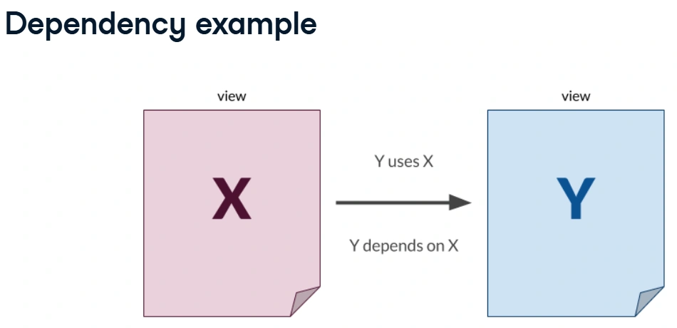
Managing dependencies
-
Materialized views often depend on other materialized views
-
Creates a dependency chain when refreshing views
-
Not the most efficient to refresh all views at the same time
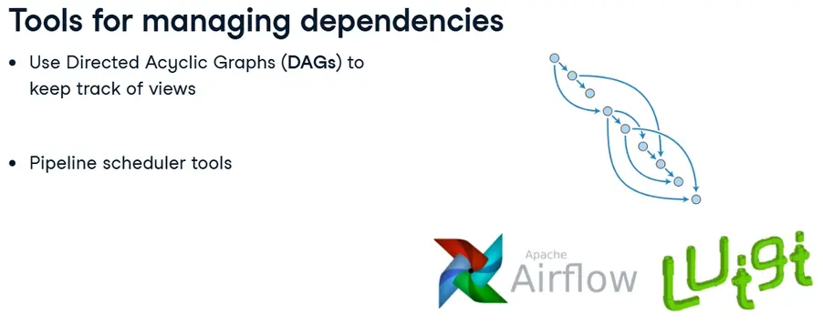
Creating and refreshing a materialized view
The syntax for creating materialized and non-materialized views are quite similar because they are both defined by a query. One key difference is that we can refresh materialized views, while no such concept exists for non-materialized views. It’s important to know how to refresh a materialized view, otherwise the view will remain a snapshot of the time the view was created.
In this exercise, you will create a materialized view from the table genres. A new record will then be inserted into genres. To make sure the view has the latest data, it will have to be refreshed.
-
Create a materialized view called
genre_countthat holds the number of reviews for each genre. -
Refresh
genre_countso that the view is up-to-date.
-- Create a materialized view called genre_count
CREATE MATERIALIZED VIEW genre_count AS
SELECT genre, COUNT(*)
FROM genres
GROUP BY genre;
INSERT INTO genres
VALUES (50000, 'classical');
-- Refresh genre_count
REFRESH MATERIALIZED VIEW genre_count;
SELECT * FROM genre_count;
Database roles and access control
Granting and revoking access to a view
GRANT privilege(s) or REVOKE privilege(s)
ON object
TO role or FROM role
-
Privileges:
SELECT,INSERT,UPDATE,DELETE, etc. -
Objects: table, view, schema, etc.
-
Roles: a database user or a group of database users
GRANT UPDATE ON ratings TO PUBLIC;
REVOKE INSERT ON films FROM db_user;
Database roles
-
Manage database access permissions
-
A database role is an entity that contains information that:
-
Define the role’s privileges
-
Can you login?
-
Can you create databases?
-
Can you write to tables?
-
-
Interact with the client authentication system
- Password
-
-
Roles can be assigned to one or more users
-
Roles are global across a database cluster installation
Create a role
- Empty role
**CREATE** ROLE data_analyst;
- Roles with some attributes set
**CREATE** ROLE intern WITH PASSWORD 'PasswordForIntern' VALID UNTIL '2020-01-01';
**CREATE** ROLE admin CREATEDB;
**ALTER** ROLE admin CREATEROLE;
GRANT and REVOKE privileges from roles
grants UPDATE permission on the “ratings” table to the “data_analyst” role.
GRANT UPDATE ON ratings TO data_analyst;
Revokes UPDATE permission on the “ratings” table from the “data_analyst” role.
REVOKE UPDATE ON ratings FROM data_analyst;
The available privileges in PostgreSQL are:
SELECT, INSERT, UPDATE, DELETE, TRUNCATE, REFERENCES, TRIGGER, CREATE, CONNECT, TEMPORARY, EXECUTE, and USAGE
Users and groups (are both roles)
A role is an entity that can function as a user and/or a group
-
User roles
-
Group roles
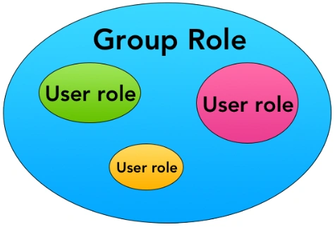
Users and groups (are both roles)
Group role
CREATE ROLE data_analyst;
User role
CREATE ROLE intern WITH PASSWORD 'PasswordForIntern' VALID UNTIL '2020-01-01';
Group role
CREATE ROLE data_analyst;
User role
CREATE ROLE alex WITH PASSWORD 'PasswordForIntern' VALID UNTIL '2020-01-01';
GRANT data_analyst TO alex;
REVOKE data_analyst FROM alex;
Common PostgreSQL roles
| Role | Allowed access |
|---|---|
| pg_read_all_settings | Read all configuration variables, even those normally visible only to superusers. |
| pg_read_all_stats | Read all pg_stat_* views and use various statistics related extensions, even those normally visible only to superusers. |
| pg_signal_backend | Send signals to other backends (eg: cancel query, terminate). |
| More… | More… |
Benefits and pitfalls of roles
Benefits
-
Roles live on after users are deleted
-
Roles can be created before user accounts
-
Save DBAs time
Pitfalls
-
Sometimes a role gives a specific user too much access
- You need to pay attention
Create a role
A database role is an entity that contains information that define the role’s privileges and interact with the client authentication system. Roles allow you to give different people (and often groups of people) that interact with your data different levels of access.
Imagine you founded a startup. You are about to hire a group of data scientists. You also hired someone named Marta who needs to be able to login to your database. You’re also about to hire a database administrator. In this exercise, you will create these roles.
Create a role called marta that has one attribute: the ability to login (LOGIN).
Create a role called admin with the ability to create databases (CREATEDB) and to create roles (CREATEROLE).
Create a role called data_scientist.
-- Create a data scientist role
CREATE ROLE data_scientist;
Create a role called marta that has one attribute: the ability to login (LOGIN).
-- Create a role for Marta
CREATE ROLE marta LOGIN;
Create a role called admin with the ability to create databases (CREATEDB) and to create roles (CREATEROLE).
CREATE ROLE admin WITH CREATEDB CREATEROLE;
GRANT privileges and ALTER attributes
Once roles are created, you grant them specific access control privileges on objects, like tables and views. Common privileges being SELECT, INSERT, UPDATE, etc.
Imagine you’re a cofounder of that startup and you want all of your data scientists to be able to update and insert data in the long_reviews view. In this exercise, you will enable those soon-to-be-hired data scientists by granting their role (data_scientist) those privileges. Also, you’ll give Marta’s role a password.
Grant the data_scientist role update and insert privileges on the long_reviews view.
Alter Marta’s role to give her the provided password.
-- Grant data_scientist update and insert privileges
GRANT UPDATE, INSERT ON long_reviews TO data_scientist;
-- Give Marta's role a password
ALTER ROLE marta WITH PASSWORD 's3cur3p@ssw0rd';
Add a user role to a group role
There are two types of roles: user roles and group roles. By assigning a user role to a group role, a database administrator can add complicated levels of access to their databases with one simple command.
For your startup, your search for data scientist hires is taking longer than expected. Fortunately, it turns out that Marta, your recent hire, has previous data science experience and she’s willing to chip in the interim. In this exercise, you’ll add Marta’s user role to the data scientist group role. You’ll then remove her after you complete your hiring process.
Add Marta’s user role to the data scientist group role.
Celebrate! You hired multiple data scientists.
Remove Marta’s user role from the data scientist group role.
-- Add Marta to the data scientist group
GRANT data_scientist TO marta;
-- Celebrate! You hired data scientists.
-- Remove Marta from the data scientist group
REVOKE data_scientist FROM marta;
Table partitioning
Why partition?
Tables grow (100s Gb / Tb)
Problem: queries/updates become slower
Because: e.g., indices don’t fit memory
Solution: split table into smaller parts (= partitioning)
Data modeling refresher
-
Conceptual data model
-
Logical data model
For partitioning, logical data model is the same
-
Physical data model
Partitioning is part of physical data model
Vertical partitioning
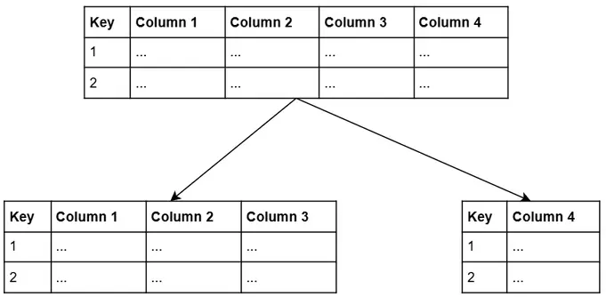
split table even then fully normalized
Vertical partitioning: an example
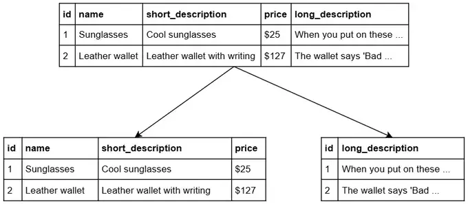
E.g., store
Long_descriptionon slower medium
Horizontal partitioning
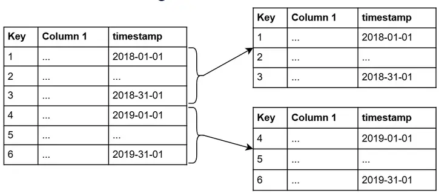
Horizontal partitioning: an example
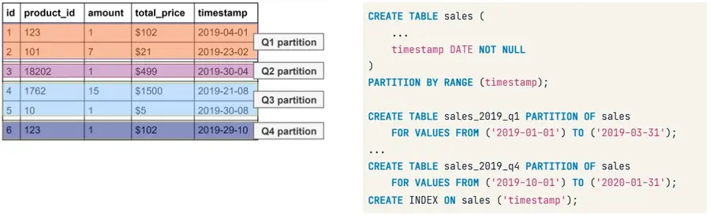
Pros/cons of horizontal partitioning
Pros
-
Indices of heavily-used partitions fit in memory
-
Move to specific medium: slower vs. faster
-
Used for both OLAP and OLTP
Cons
-
Partitioning existing table can be a hassle
-
Some constraints can not be set
Relation to sharding
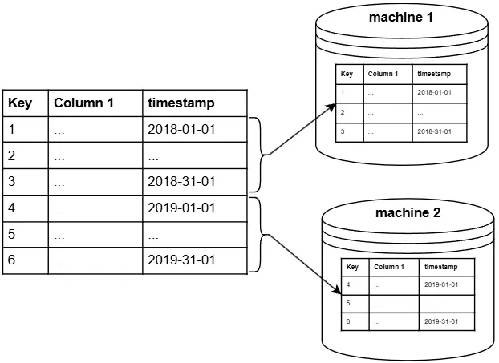
Creating vertical partitions
In the video, you learned about vertical partitioning and saw an example.
For vertical partitioning, there is no specific syntax in PostgreSQL. You have to create a new table with particular columns and copy the data there. Afterward, you can drop the columns you want in the separate partition. If you need to access the full table, you can do so by using a JOIN clause.
In this exercise and the next one, you’ll be working with the example database called pagila. It’s a database that is often used to showcase PostgreSQL features. The database contains several tables. We’ll be working with the film table. In this exercise, we’ll use the following columns:
-
film_id: the unique identifier of the film -
long_description: a lengthy description of the film
Create a new table film_descriptions containing 2 fields: film_id, which is of type INT, and long_description, which is of type TEXT.
Occupy the new table with values from the film table.
-- Create a new table called film_descriptions
CREATE TABLE film_descriptions (
film_id INT,
long_description TEXT
);
-- Copy the descriptions from the film table
INSERT INTO film_descriptions
SELECT film_id, long_description FROM film;
Drop the field long_description from the film table.
Join the two resulting tables to view the original table.
-- Create a new table called film_descriptions
CREATE TABLE film_descriptions (
film_id INT,
long_description TEXT
);
-- Copy the descriptions from the film table
INSERT INTO film_descriptions
SELECT film_id, long_description FROM film;
-- Drop the descriptions from the original table
ALTER TABLE film_descriptions DROP COLUMN long_description;
-- Join to view the original table
SELECT * FROM film
JOIN film_descriptions USING(film_id);
Creating horizontal partitions
In the video, you also learned about horizontal partitioning.
The example of horizontal partitioning showed the syntax necessary to create horizontal partitions in PostgreSQL. If you need a reminder, you can have a look at the slides.
In this exercise, however, you’ll be using a list partition instead of a range partition. For list partitions, you form partitions by checking whether the partition key is in a list of values or not.
To do this, we partition by LIST instead of RANGE. When creating the partitions, you should check if the values are IN a list of values.
film_id: the unique identifier of the film
title: the title of the film
release_year: the year it’s released
Create the table film_partitioned, partitioned on the field release_year.
-- Create a new table called film_partitioned
CREATE TABLE film_partitioned (
film_id INT,
title TEXT NOT NULL,
release_year TEXT
)
PARTITION BY LIST (release_year);
Create three partitions: one for each release year: 2017, 2018, and 2019. Call the partition for 2019 film_2019, etc.
-- Create a new table called film_partitioned
CREATE TABLE film_partitioned (
film_id INT,
title TEXT NOT NULL,
release_year TEXT
)
PARTITION BY LIST (release_year);
-- Create the partitions for 2019, 2018, and 2017
CREATE TABLE film_2019
PARTITION OF film_partitioned FOR VALUES IN ('2019');
CREATE TABLE film_2018
PARTITION OF film_partitioned FOR VALUES IN ('2018');
CREATE TABLE film_2017
PARTITION OF film_partitioned FOR VALUES IN ('2017');
Occupy the new table, film_partitioned, with the three fields required from the film table.
-- Create a new table called film_partitioned
CREATE TABLE film_partitioned (
film_id INT,
title TEXT NOT NULL,
release_year TEXT
)
PARTITION BY LIST (release_year);
-- Create the partitions for 2019, 2018, and 2017
CREATE TABLE film_2019
PARTITION OF film_partitioned FOR VALUES IN ('2019');
CREATE TABLE film_2018
PARTITION OF film_partitioned FOR VALUES IN ('2018');
CREATE TABLE film_2017
PARTITION OF film_partitioned FOR VALUES IN ('2017');
-- Insert the data into film_partitioned
INSERT INTO film_partitioned
SELECT film_id, title, release_year FROM film;
-- View film_partitioned
SELECT * FROM film_partitioned;
Data integration
What is Data Integration
Data Integration combines data from different sources, formats, and technologies to provide users with a translated and unified view of that data
Business Case Examples
-
360-degree customer view
-
Acquisition
-
Legacy systems
Unified data model
There are a few things to consider when integrating data. What is your final goal? Your unified data model could be used to create dashboards, like graphs of daily sales, or data products, such as a recommendation engine. The final data model needs to be fast enough for your use-case.
Data sources
The necessary information is held in these data sources.
Data sources format
Which formats is each data source stored in? For example, it could be PostgreSQL, MongoDB or a CSV.
Unified data model format
Which format should the unified data model take? For example, Redshift, a data warehouse service offered by AWS.
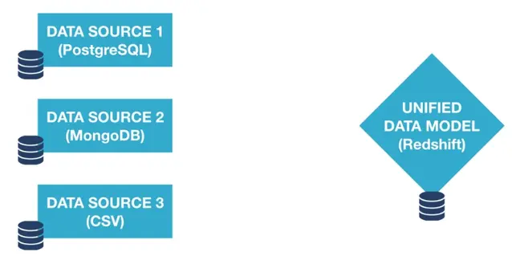
Example
Marketing wants to know which customers to target. They need information from sales, stored in PostgreSQL, to see which customers can afford the new product. They also need information from the product department, stored in MongoDB to identify potential early adopters.
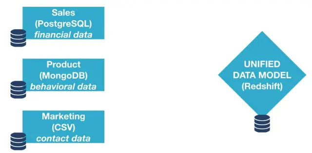
Update cadence - sales
Next, how often do you want to update the data? Updating daily would probably be sufficient for sales data.
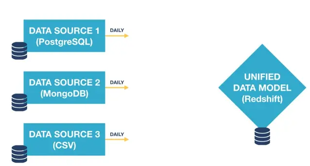
Update cadence - air traffic
For a scenario like air traffic, you want real time updates.
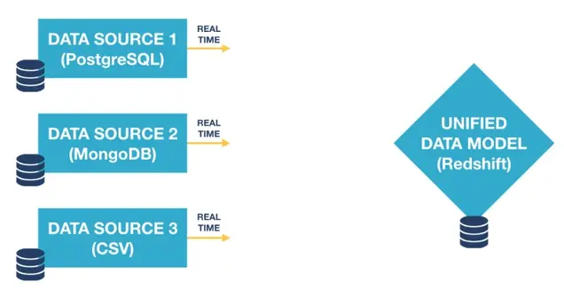
Different update cadences
Your data sources can have different update cadences.
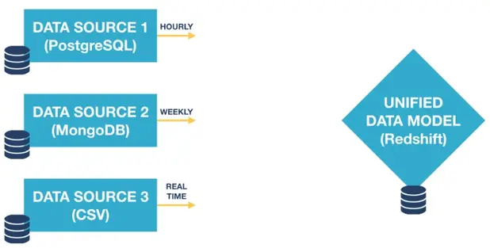
So simple?
So that’s it? You just plug your sources to the unified data model?
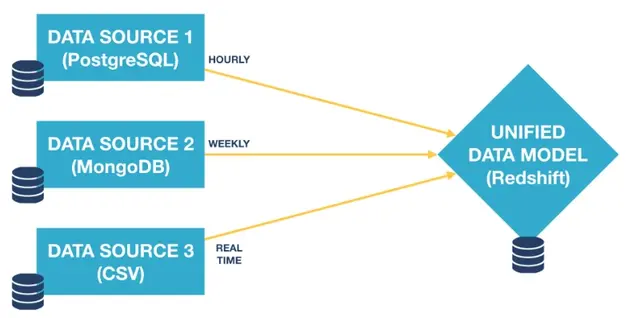
Not really
Not really. Your sources are in different formats, you need to make sure they can be assembled together.
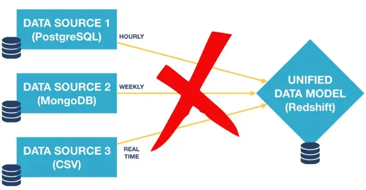
Transformations
Enter transformations. A transformation is a program that extracts content from the table and transforms it into the chosen format for the unified model. These transformations can be hand-coded, but you would have to make and maintain a transformation for each data source.
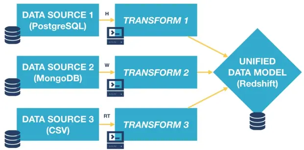
Transformation - tools
You can also use a data integration tool, which provides the needed ETL. For example Apache Airflow or Scriptella.
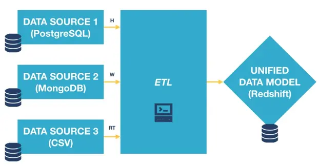
Choosing a Data Integration Tool
-
Flexible
-
Reliable
-
Scalable
Automated testing and proactive alerts
You should have automated testing and proactive alerts. If any data gets corrupted on its way to the unified data model, the system lets you know. For example, you could aggregate sales data after each transformation and ensure that the total amount remains the same.
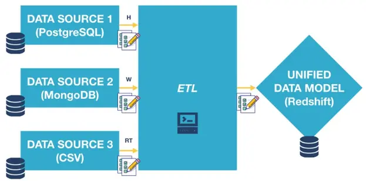
Security
Security is also a concern: if data access was originally restricted, it should remain restricted in the unified data model.
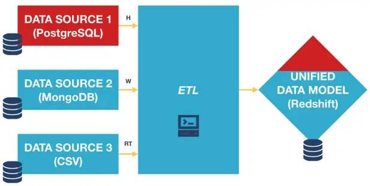
Security - credit card anonymization
For example, business analysts using the unified data model should not have access to the credit card numbers. You should anonymize the data during ETL so that analysts can only access the first four numbers, to identify the type of card being used.
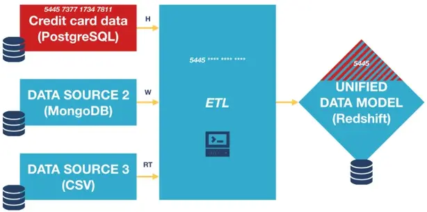
Data governance - lineage
For data governance purposes, you need to consider lineage: for effective auditing, you should know where the data originated and where it is used at all times.
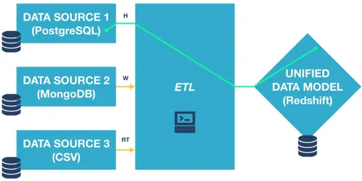
Picking a Database Management System (DBMS)
DBMS
DBMS stands for Database Management System. A DBMS is a system software for creating and maintaining databases. The DBMS manages three important aspects: the data, the database schema which defines the database’s logical structure, and the database engine that allows data to be accessed, locked and modified. Essentially, the DBMS serves as an interface between the database and end users or application programs.
-
DBMS: DataBase Management System
-
Create and maintain databases
-
Data
-
Database schema
-
Database engine
-
-
Interface between database and end users
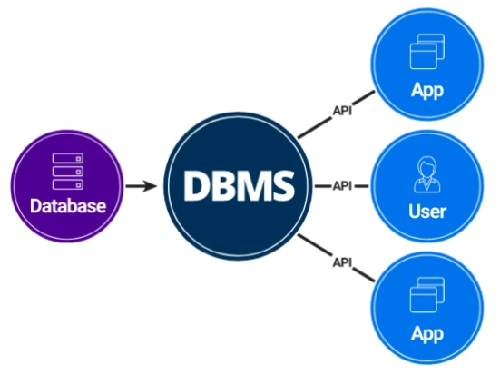
SQL DBMS
A SQL DBMS, also called a Relational DataBase Management System, is a kind of DBMS based on the relational data model. This is what’s been used in the course so far. RDBMSs typically employ SQL for managing and accessing data. Some examples of RDBMSs include SQL Server, PostgreSQL, and Oracle SQL. There are two reasons why you might consider an RDBMS. It’s a good option when working with structured, unchanging data that will benefit from a predefined schema. Or if all data must be consistent without leaving room for error, such as with accounting systems for example.
-
Relational DataBase Management System (RDBMS)
-
Based on the relational model of data
-
Query language: SQL
-
Best option when:
-
Data is structured and unchanging
-
Data must be consistent
-
Microsoft SQL Server, PostgreSQL, Oracle..
NoSQL DBMS
Non-relational DBMSs are called NoSQL DBMSs. They’re much less structured than relational databases, and are document-centered, rather than table-centered. Data in NoSQL databases don’t have to fit into well-defined rows and columns. NoSQL is a good choice for those companies experiencing rapid data growth with no clear schema definitions. NoSQL offers much more flexibility than a SQL DBMS and is a solid option for companies who must analyze large quantities of data or manage data structures that vary. NoSQL DBMSs are generally classified as one of four types: key-value store, document store, columnar, or graph databases.
-
Less structured
-
Document-centered rather than table-centered
-
Data doesn’t have to fit into well-defined rows and columns
-
Best option when:
-
Rapid growth
-
No clear schema definitions
-
Large quantities of data
-
-
Types: key-value store, document store, columnar database, graph database
NoSQL DBMS - key-value store
A key-value database stores combinations of keys and values. The key serves as a unique identifier to retrieve an associated value. Values can be anything from simple objects, like integers or strings, to more complex objects, like JSON structures. They are most frequently used for managing session information in web applications. For example, managing shopping carts for online buyers. An example DBMS is Redis.
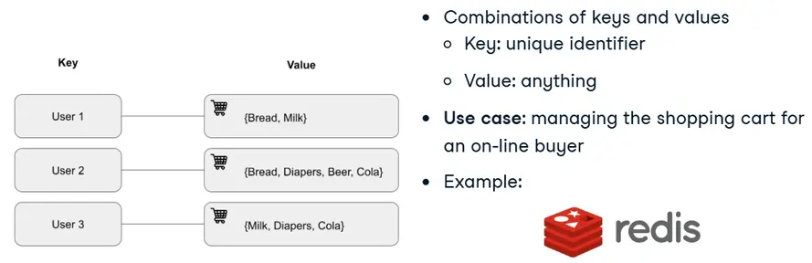
NoSQL DBMS - document store
Document stores are similar to key-value in that they consist of keys, each corresponding to a value. The difference is that the stored values, referred to as documents, provide some structure and encoding of the managed data. That structure can be used to do more advanced queries on the data instead of just value retrieval. A document database is a great choice for content management applications such as blogs and video platforms. Each entity that the application tracks can be stored as a single document. An example of a document store DBMS is mongoDB.
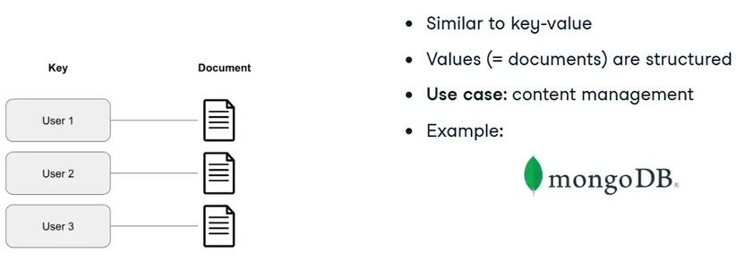
NoSQL DBMS - columnar database
Rather than grouping columns together into tables, columnar databases store each column in a separate file in the system’s storage. This allows for databases that are more scalable, and faster at scale. Use a columnar database for big data analytics where speed is important. An example is Cassandra.
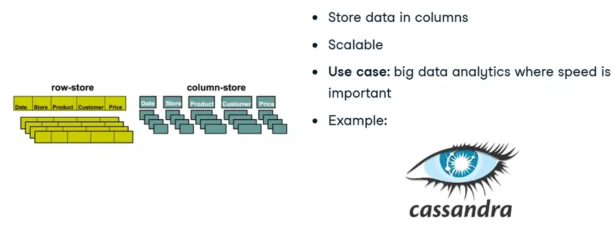
NoSQL DBMS - graph database
Here, the data is interconnected and best represented as a graph. This method is capable of lots of complexity. Graph databases are used by most social networks and pretty much any website that recommends anything based on your behavior. An example of a graph DBMS is Neo4j.
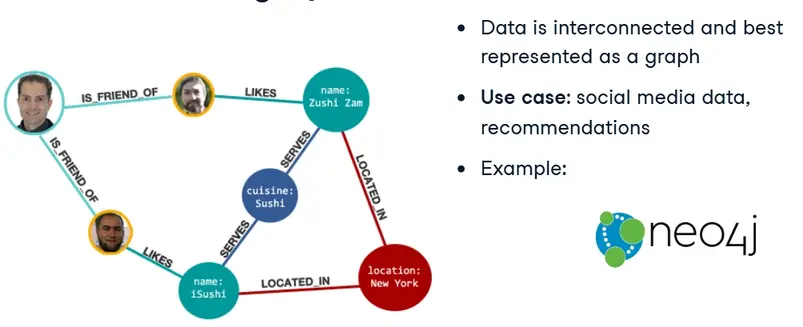
Choosing a DBMS
So, the choice of the database depends on the business need. If your application has a fixed structure and doesn’t need frequent modifications, a SQL DBMS is preferable. Conversely, if you have applications where data is changing frequently and growing rapidly, like in big data analytics, NoSQL is the best option for you.
Introduction to Relational Databases in SQL
Introduction to relational databases
Your first duty: Have a look at the PostgreSQL database
A relational database:
-
real-life entities become tables
-
reduced redundancy
-
data integrity by relationships
-
e.g.
professors,universities,companies -
e.g. only one entry in
companiesfor the bank “Credit Suisse” -
e.g. a
professorcan work at multipleuniversitiesandcompanies, acompanycan employ multipleprofessors
Your first duty: Have a look at the PostgreSQL database
SELECT table_schema, table_name
FROM information_schema.tables;
table_schema | table_name
----------------+--------------------
pg_catalog | pg_statistic
pg_catalog | pg_type
pg_catalog | pg_policy
pg_catalog | pg_authid
pg_catalog | pg_shadow
public | university_professors
pg_catalog | pg_settings
...
Have a look at the columns of a certain table
SELECT table_name, column_name, data_type
FROM information_schema.columns
WHERE table_name = 'pg_config';
table_name | column_name | data_type
------------+-------------+-----------
pg_config | name | text
pg_config | setting | text
Query information_schema with SELECT
information_schema is a meta-database that holds information about your current database. information_schema has multiple tables you can query with the known SELECT * FROM syntax:
-
tables: information about all tables in your current database -
columns: information about all columns in all of the tables in your current database … In this exercise, you’ll only need information from the ‘public’ schema, which is specified as the columntable_schemaof thetablesandcolumnstables. The ‘public’ schema holds information about user-defined tables and databases. The other types oftable_schemahold system information – for this course, you’re only interested in user-defined stuff.
Get information on all table names in the current database, while limiting your query to the ‘public’ table_schema.
-- Query the right table in information_schema
SELECT table_name
FROM information_schema.tables
-- Specify the correct table_schema value
WHERE table_schema = 'public';
Now have a look at the columns in university_professors by selecting all entries in information_schema.columns that correspond to that table.
-- Query the right table in information_schema to get columns
SELECT column_name, data_type
FROM information_schema.columns
WHERE table_name = 'university_professors' AND table_schema = 'public';
Tables: At the core of every database
Redundancy in the university_professors table
SELECT *
FROM university_professors
LIMIT 3;
-[ RECORD 1 ]----------+--------------------------------
firstname | Karl
lastname | Aberer
university | ETH Lausanne
university_shortname | EPF
university_city | Lausanne
function | Chairman of L3S Advisory Board
organization | L3S Advisory Board
organization_sector | Education & research
-[ RECORD 2 ]----------+---------------------------------
firstname | Karl
lastname | Aberer
university | ETH Lausanne
university_shortname | EPF
university_city | Lausanne
function | Member Conseil of Zeno-Karl Schindler Foundation
organization | Zeno-Karl Schindler Foundation
organization_sector | Education & research
-[ RECORD 3 ]----------+--------------------------------------------------
firstname | Karl
lastname | Aberer
(truncated)
function | Member of Conseil Fondation IDIAP
organization | Fondation IDIAP
(truncated)
Currently: One “entity type” in the database
A better database model with three entity types
Old structure:
┌───────────────────────┐
│ university_professors │
├───────────────────────┤
│ lastname │
│ firstname │
│ university_city │
│ university_shortname │
│ university │
│ function │
│ organization │
│ organization_sector │
└───────────────────────┘
New structure:
┌──────────────────────┐ ┌──────────────────────┐ ┌───────────────────────┐
│ professors │ │ universities │ │ organizations │
├──────────────────────┤ ├──────────────────────┤ ├───────────────────────┤
│ lastname │ │ university_shortname │ │ organization │
│ firstname │ | university_city │ │ organizations_sector │
│ university_shortname │ │ university │ └───────────────────────┘
└──────────────────────┘ └──────────────────────┘
A better database model with four entity types
┌──────────────────────┐ ┌──────────────────────┐ ┌──────────────────────┐ ┌───────────────────────┐
| affiliations | │ professors │ │ universities │ │ organizations │
├──────────────────────┤ ├──────────────────────┤ ├──────────────────────┤ ├───────────────────────┤
│ furstname │ │ lastname │ │ university_shortname │ │ organization │
│ lastname │ │ firstname │ | university_city │ │ organizations_sector │
│ university_shortname │ │ university_shortname │ │ university │ └───────────────────────┘
| function | └──────────────────────┘ └──────────────────────┘
| organization |
└──────────────────────┘
Create new tables with CREATE TABLE
CREATE TABLE table_name (
column_a data_type,
column_b data_type,
column_c data_type
);
CREATE TABLE weather (
clouds text,
temperature numeric,
weather_station char(5)
);
CREATE your first few TABLEs
You’ll now start implementing a better database model. For this, you’ll create tables for the professors and universities entity types. The other tables will be created for you.
The syntax for creating simple tables is as follows:
CREATE TABLE table_name (
column_a data_type,
column_b data_type,
column_c data_type
);
Attention: Table and columns names, as well as data types, don’t need to be surrounded by quotation marks.
Create a table professors with two text columns: firstname and lastname.
-- Create a table for the professors entity type
CREATE TABLE professors (
firstname text,
lastname text
);
-- Print the contents of this table
SELECT *
FROM professors
Create a table universities with three text columns: university_shortname, university, and university_city.
-- Create a table for the universities entity type
CREATE TABLE universities (
university_shortname TEXT,
university TEXT,
university_city TEXT
);
-- Print the contents of this table
SELECT *
FROM universities
ADD a COLUMN with ALTER TABLE
Oops! We forgot to add the university_shortname column to the professors table. You’ve probably already noticed
In chapter 4 of this course, you’ll need this column for connecting the professors table with the universities table.
However, adding columns to existing tables is easy, especially if they’re still empty.
To add columns you can use the following SQL query:
ALTER TABLE table_name
ADD COLUMN column_name data_type;
Alter professors to add the text column university_shortname.
-- Add the university_shortname column
ALTER TABLE professors
ADD COLUMN university_shortname TEXT;
-- Print the contents of this table
SELECT *
FROM professors
Update your database as the structure changes
The current database model
Only store DISTINCT data in the new tables
SELECT COUNT(*)
FROM university_professors;
count
-----
1377
SELECT COUNT(DISTINCT organization)
FROM university_professors;
count
-----
1287
INSERT DISTINCT records INTO the new tables
INSERT INTO organizations
SELECT DISTINCT organization,
organization_sector
FROM university_professors;
OUTPUT: INSERT 0 1287
INSERT INTO organizations
SELECT organization,
organization_sector
FROM university_professors;
OUTPUT: INSERT 0 1377
The INSERT INTO statement
INSERT INTO table_name (column_a, column_b)
VALUES ("value_a", "value_b");
RENAME a COLUMN in affiliations
CREATE TABLE affiliations (
firstname text,
lastname text,
university_shortname text,
function text,
organisation text
);
ALTER TABLE table_name
RENAME COLUMN old_name TO new_name;
DROP a COLUMN in affiliations
CREATE TABLE affiliations (
firstname text,
lastname text,
university_shortname text,
function text,
organization text
);
ALTER TABLE table_name
DROP COLUMN column_name;
SELECT DISTINCT firstname, lastname,
university_shortname
FROM university_professors
ORDER BY lastname;
-[ RECORD 1 ]--------+---------------
firstname | Karl
lastname | Aberer
university_shortname | EPF
-[ RECORD 2 ]--------+---------------
firstname | Reza Shokrollah
lastname | Abhari
university_shortname | ETH
-[ RECORD 3 ]--------+---------------
firstname | Georges
lastname | Abou Jaoudé
university_shortname | EPF
(truncated)
(551 records)
SELECT DISTINCT firstname, lastname
FROM university_professors
ORDER BY lastname;
-[ RECORD 1 ]---+------------
firstname | Karl
lastname | Aberer
-[ RECORD 2 ]---+------------
firstname | Reza Shokrollah
lastname | Abhari
-[ RECORD 3 ]---+
firstname | Georges
lastname | Abou Jaoudé
(truncated)
(551 records)
A professor is uniquely identified by firstname, lastname only
RENAME and DROP COLUMNs in affiliations
As mentioned in the video, the still empty affiliations table has some flaws. In this exercise, you’ll correct them as outlined in the video.
You’ll use the following queries:
- To rename columns:
ALTER TABLE table_name
RENAME COLUMN old_name TO new_name;
- To delete columns:
ALTER TABLE table_name
DROP COLUMN column_name;
- Rename the organisation column to
organizationinaffiliations.
-- Rename the organisation column
ALTER TABLE affiliations
RENAME COLUMN organisation TO organization;
- Delete the
university_shortnamecolumn inaffiliations.
-- Rename the organisation column
ALTER TABLE affiliations
RENAME COLUMN organisation TO organization;
-- Delete the university_shortname column
ALTER TABLE affiliations
DROP COLUMN university_shortname;
Migrate data with INSERT INTO SELECT DISTINCT
Now it’s finally time to migrate the data into the new tables. You’ll use the following pattern:
INSERT INTO ...
SELECT DISTINCT ...
FROM ...;
It can be broken up into two parts:
First part:
SELECT DISTINCT column_name1, column_name2, ...
FROM table_a;
This selects all distinct values in table table_a – nothing new for you.
Second part:
INSERT INTO table_b ...;
Take this part and append it to the first, so it inserts all distinct rows from table_a into table_b.
One last thing: It is important that you run all of the code at the same time once you have filled out the blanks.
- Insert all
DISTINCTprofessors fromuniversity_professorsintoprofessors. Print all the rows inprofessors.
-- Insert unique professors into the new table
INSERT INTO professors
SELECT DISTINCT firstname, lastname, university_shortname
FROM university_professors;
-- Doublecheck the contents of professors
SELECT *
FROM professors;
- Insert all
DISTINCTaffiliations intoaffiliationsfromuniversity_professors.
-- Insert unique professors into the new table
INSERT INTO professors
SELECT DISTINCT firstname, lastname, university_shortname
FROM university_professors;
-- Doublecheck the contents of professors
SELECT *
FROM professors;
Delete tables with DROP TABLE
Obviously, the university_professors table is now no longer needed and can safely be deleted.
For table deletion, you can use the simple command:
DROP TABLE table_name;
- Delete the
university_professorstable.
-- Delete the university_professors table
DROP TABLE university_professors;
Better data quality with constraints
Why constraints?
-
Constraints give the data structure
-
Constraints help with consistency, and thus data quality
-
Data quality is a business advantage / data science prerequisite
-
Enforcing is difficult, but PostgreSQL helps
Data types as attribute constraints
| Name | Aliases | Description |
|---|---|---|
| bigint | int8 | signed eight-byte integer |
| bigserial | serial8 | autoincrementing eight-byte integer |
| bit [ (n) ] | fixed-length bit string | |
| bit varying [ (n) ] | varbit [ (n) ] | variable-length bit string |
| boolean | bool | logical Boolean (true/false) |
| box | rectangular box on a plane | |
| bytes | binary data (“byte array”) | |
| character [ (n) ] | char [ (n) ] | fixed-length character string |
| character varying [ (n) ] | varchar [ (n) ] | variable-length character string |
| cidr | IPv4 or IPv6 network address |
From the PostgreSQL documentation.
Dealing with data types (casting)
CREATE TABLE weather (
temperature integer,
wind_speed text);
SELECT temperature * wind_speed AS wind_child
FROM weather;
operator does not exist: integer * text
HINT: No operator matches the given name and argument type(s).
You might need to add explicit type casts.
SELECT temperature * CAST(wind_speed AS integer) AS wind_child
FROM weather;
Conforming with data types
For demonstration purposes, I created a fictional database table that only holds three records. The columns have the data types date, integer, and text, respectively.
CREATE TABLE transactions (
transaction_date date,
amount integer,
fee text
);
Have a look at the contents of the transactions table.
The transaction_date accepts date values. According to the PostgreSQL documentation, it accepts values in the form of YYYY-MM-DD, DD/MM/YY, and so forth.
Both columns amount and fee appear to be numeric, however, the latter is modeled as text – which you will account for in the next exercise.
Instructions
-
Execute the given sample code.
-
As it doesn’t work, have a look at the error message and correct the statement accordingly – then execute it again.
-- Let's add a record to the table
INSERT INTO transactions (transaction_date, amount, fee)
VALUES ('2018-09-24', '5454', '30');
-- Doublecheck the contents
SELECT *
FROM transactions;
Type CASTs
In the video, you saw that type casts are a possible solution for data type issues. If you know that a certain column stores numbers as text, you can cast the column to a numeric form, i.e. to integer.
SELECT CAST(some_column AS integer)
FROM table;
Now, the some_column column is temporarily represented as integer instead of text, meaning that you can perform numeric calculations on the column.
Instructions
-
Execute the given sample code.
-
As it doesn’t work, add an integer type cast at the right place and execute it again.
-- Calculate the net amount as amount + fee
SELECT transaction_date, amount + CAST(fee AS integer) net_amount
FROM transactions;
Working with data types
-
Enforced on columns (i.e. attributes)
-
Define the so-called “domain” of a column
-
Define what operations are possible
-
Enforce consistent storage of values
The most common types
-
text: character strings of any length -
varchar [ (x) ]: a maximum ofxcharacters -
char [ (x) ]: a fixed-length string ofxcharacters -
boolean: can only take three states, e.g.TRUE,FALSEandNULL(unknown) -
date,timeandtimestamp: various formats for date and time calculations -
numeric: arbitrary precision numbers, e.g.3.1457 -
integer: whole numbers in the range of-2147483648and+2147483647
From the PostgreSQL documentation.
Specifying types upon table creation
CREATE TABLE students (
ssn integer,
name varchar(64),
dob date,
average_grade numeric(3, 2), -- e.g. 5.54
tuition_paid boolean
);
Alter types after table creation
ALTER TABLE students
ALTER COLUMN name
TYPE varchar(128);
ALTER TABLE students
ALTER COLUMN average_grade
TYPE integer
-- Turns 5.54 into 6, not 5, before type conversion
USING ROUND(average_grade);
Change types with ALTER COLUMN
The syntax for changing the data type of a column is straightforward. The following code changes the data type of the column_name column in table_name to varchar(10):
ALTER TABLE table_name
ALTER COLUMN column_name
TYPE varchar(10)
Now it’s time to start adding constraints to your database.
Have a look at the distinct university_shortname values in the professors table and take note of the length of the strings.
-- Select the university_shortname column
SELECT DISTINCT(university_shortname)
FROM professors;
Now specify a fixed-length character type with the correct length for university_shortname.
-- Specify the correct fixed-length character type
ALTER TABLE professors
ALTER COLUMN university_shortname
TYPE char(3);
Change the type of the firstname column to varchar(64).
-- Change the type of firstname
ALTER TABLE professors
ALTER COLUMN firstname
TYPE varchar(64);
Convert types USING a function
If you don’t want to reserve too much space for a certain varchar column, you can truncate the values before converting its type.
For this, you can use the following syntax:
ALTER TABLE table_name
ALTER COLUMN column_name
TYPE varchar(x)
USING SUBSTRING(column_name FROM 1 FOR x)
You should read it like this: Because you want to reserve only x characters for column_name, you have to retain a SUBSTRING of every value, i.e. the first x characters of it, and throw away the rest. This way, the values will fit the varchar(x) requirement.
Run the sample code as is and take note of the error.
Now use SUBSTRING() to reduce firstname to 16 characters so its type can be altered to varchar(16).
-- Convert the values in firstname to a max. of 16 characters
ALTER TABLE professors
ALTER COLUMN firstname
TYPE varchar(16)
USING SUBSTRING(firstname FROM 1 FOR 16)
The not-null and unique constraints
The not-null constraint
-
Disallow
NULLvalues in a certain column -
Must hold true for the current state
-
Must hold true for any future state
What does NULL mean?
-
unknown
-
does not exist
-
does not apply
-
…
What does NULL mean? An example
CREATE TABLE students (
ssn integer not null,
lastname varchar(64) not null,
home_phone integer,
office_phone integer
);
NULL != NULL
How to add or remove a not-null constraint
When creating a table…
CREATE TABLE students (
ssn integer **not null**,
lastname varchar(64) **not null**,
home_phone integer,
office_phone integer
);
After the table has been created…
ALTER TABLE students
ALTER COLUMN home_phone
SET NOT NULL;
ALTER TABLE students
ALTER COLUMN ssn
DROP NOT NULL;
The unique constraint
-
Disallow duplicate values in a column
-
Must hold true for the current state
-
Must hold true for any future state
Adding unique constraints
CREATE TABLE table_name (
column_name UNIQUE
);
ALTER TABLE table_name
ADD CONSTRAINT some_name UNIQUE(column_name);
Disallow NULL values with SET NOT NULL
The professors table is almost ready now. However, it still allows for NULLs to be entered. Although some information might be missing about some professors, there’s certainly columns that always need to be specified.
Add a not-null constraint for the firstname column.
-- Disallow NULL values in firstname
ALTER TABLE professors
ALTER COLUMN firstname SET NOT NULL;
Add a not-null constraint for the lastname column.
-- Disallow NULL values in lastname
ALTER TABLE professors
ALTER COLUMN lastname SET NOT NULL;
Make your columns UNIQUE with ADD CONSTRAINT
As seen in the video, you add the UNIQUE keyword after the column_name that should be unique. This, of course, only works for new tables:
CREATE TABLE table_name (
column_name UNIQUE
);
If you want to add a unique constraint to an existing table, you do it like that:
ALTER TABLE table_name
ADD CONSTRAINT some_name UNIQUE(column_name);
Note that this is different from the ALTER COLUMN syntax for the not-null constraint. Also, you have to give the constraint a name some_name
- Add a unique constraint to the
university_shortnamecolumn inuniversities. Give it the nameuniversity_shortname_unq.
-- Make universities.university_shortname unique
ALTER TABLE universities
ADD CONSTRAINT university_shortname_unq UNIQUE(university_shortname);
Add a unique constraint to the organization column in organizations. Give it the name organization_unq.
-- Make organizations.organization unique
ALTER TABLE organizations
ADD CONSTRAINT organization_unq UNIQUE(organization);
Keys and superkeys
The current database model
The database model with primary keys
What is a key?
-
Attribute(s) that identify a record uniquely
-
As long as attributes can be removed: superkey
-
If no more attributes can be removed: minimal superkey or key
License_no | serial_no | make | model | year
-------------------|-----------|------------|---------|-----
Texas ABC-739 | A69352 | Ford | Mustang | 2
Florida TVP-347 | B43696 | Oldsmobile | Cutlass | 5
New York MP0-22 | X83554 | Oldsmobile | Delta | 1
California 432-TFY | C43742 | Mercedes | 190-D | 99
California RSK-629 | Y82935 | Toyota | Camry | 4
Texas RSK-629 | U028365 | Jaguar | XJS | 4
SK = super key
-
SK1 = {license_no, serial_no, make, model, year}
-
SK2 = {license_no, serial_no, make, model}
License_no | serial_no | make | model | year
-------------------|-----------|------------|---------|-----
Texas ABC-739 | A69352 | Ford | Mustang | 2
Florida TVP-347 | B43696 | Oldsmobile | Cutlass | 5
New York MP0-22 | X83554 | Oldsmobile | Delta | 1
California 432-TFY | C43742 | Mercedes | 190-D | 99
California RSK-629 | Y82935 | Toyota | Camry | 4
Texas RSK-629 | U028365 | Jaguar | XJS | 4
K1 = {license_no}; K2 = {serial_no}; K3 = {model}; K4 = {make, year}
-
K1 to 3 only consist of one attribute
-
Removing either “make” or “year” from K4 would result in duplicates
-
Only one candidate key can be the chosen key
Get to know SELECT COUNT DISTINCT
Your database doesn’t have any defined keys so far, and you don’t know which columns or combinations of columns are suited as keys.
There’s a simple way of finding out whether a certain column (or a combination) contains only unique values – and thus identifies the records in the table.
You already know the SELECT DISTINCT query from the first chapter. Now you just have to wrap everything within the COUNT() function and PostgreSQL will return the number of unique rows for the given columns:
SELECT COUNT(DISTINCT(column_a, column_b, ...))
FROM table;
First, find out the number of rows in universities.
-- Count the number of rows in universities
SELECT Count(*)
FROM universities;
Then, find out how many unique values there are in the university_city column.
-- Count the number of distinct values in the university_city column
SELECT COUNT(DISTINCT(university_city))
FROM universities;
Identify keys with SELECT COUNT DISTINCT
There’s a very basic way of finding out what qualifies for a key in an existing, populated table:
1.Count the distinct records for all possible combinations of columns. If the resulting number x equals the number of all rows in the table for a combination, you have discovered a superkey.
2.Then remove one column after another until you can no longer remove columns without seeing the number x decrease. If that is the case, you have discovered a (candidate) key.
The table professors has 551 rows. It has only one possible candidate key, which is a combination of two attributes. You might want to try different combinations using the “Run code” button. Once you have found the solution, you can submit your answer.
- Using the above steps, identify the candidate key by trying out different combination of columns.
-- Try out different combinations
SELECT COUNT(DISTINCT(firstname, lastname))
FROM professors;
Primary keys
-
One primary key per database table, chosen from candidate keys
-
Uniquely identifies records, e.g. for referencing in other tables
-
Unique and not-null constraints both apply
-
Primary keys are time-invariant: choose columns wisely!
Specifying primary keys
CREATE TABLE products (
product_no integer UNIQUE NOT NULL,
name text,
price numeric
);
CREATE TABLE products (
product_no integer PRIMARY KEY,
name text,
price numeric
);
CREATE TABLE example (
a integer,
b integer,
c integer,
PRIMARY KEY (a, c)
);
ALTER TABLE table_name
ADD CONSTRAINT some_name PRIMARY KEY (column_name)